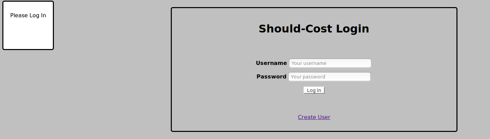

Converting the login.php page to the new template went off with absolutely no problem. The forms work just fine, and entering the name and password takes me to searchproduct.php as intended. The sidebar is not there because there's no need for it on the login page, and I may delete it entirely. I still want to create a separate page for the sidebar and see if I can load it automatically onto the pages that need it.

Then I went to do the same to searchproduct.php, and somehow broke the script that was enabling the autocomplete function. At this point I will probably try to roll back the changes I've already made - there must be a way to pull a single file back from Github*.
Right now the autocomplete scripts are accessing the entire list of items that could be searched for, then saving them as an array. It works now because the test lists that I have been working with have been quite small. They worked fine during the actual course demo for the same reason. But it's not going to work on a larger scale. What I want to eventually do is set it up so that it only checks for options after a certain number of charaters has already been entered. For now I could get away with one or two. Later it might be three. I wanted to do something similar during the course, but it was a low priority.
I'm planning to start over with the autocomplete scripts instead of trying to adapt the one here. I need to rewrite the code myself so that I can really understand what it's doing. Autocomplete at this point is not an absolute necessity. I'm still going to investigate the current scripts and figure out what happened, because I am not sure what happened.
*This is how I fixed it.
It took me a while to find a straight answer about this problem. I hope that writing it down here will help someone.